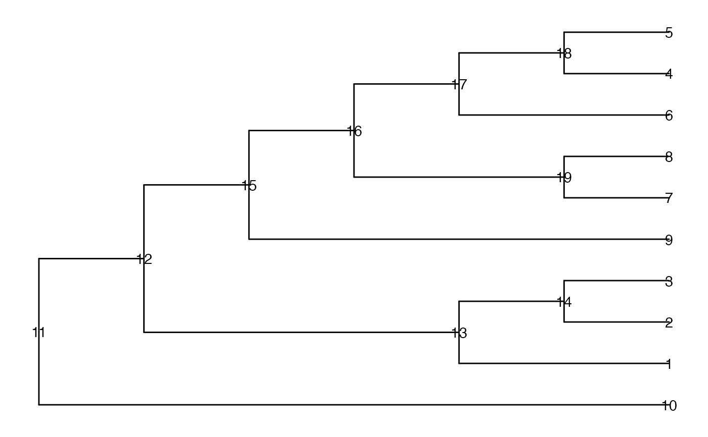

Check whether nodes are contained in the same path from a leaf to the root in a tree
Source:R/tree_isConnect.R
isConnect.RdPerform an elementwise check of whether two vectors of nodes are "connected" in specific ways in a tree. A pair of nodes are considered to be connected if they are part of the same path from a leaf to the root of the tree. They are considered directly connected if one node is the parent of the other, and indirectly connected otherwise.
Arguments
- tree
A
phyloobject.- node_a, node_b
The two vectors of nodes (either node numbers or node labels) to check for connections. The vectors should have the same length (if not, the shorter one will be recycled), as the check for connectivity is done elementwise.
- connect
One of "any", "direct", "indirect", the type of connections to search for.
Value
A logical vector of the same length as node_a and
node_b, where each element indicates whether the corresponding
elements of node_a and node_b are connected in the
specified way.
Examples
suppressPackageStartupMessages({
library(ggtree)
library(TreeSummarizedExperiment)
})
data(tinyTree)
ggtree(tinyTree, branch.length = "none") +
geom_text2(aes(label = node))

node_a <- c(4, 18, 19, 2)
node_b <- c(4, 5, 6, 3)
isConnect(tree = tinyTree, node_a = node_a,
node_b = node_b, connect = "any")
#> [1] TRUE TRUE FALSE FALSE